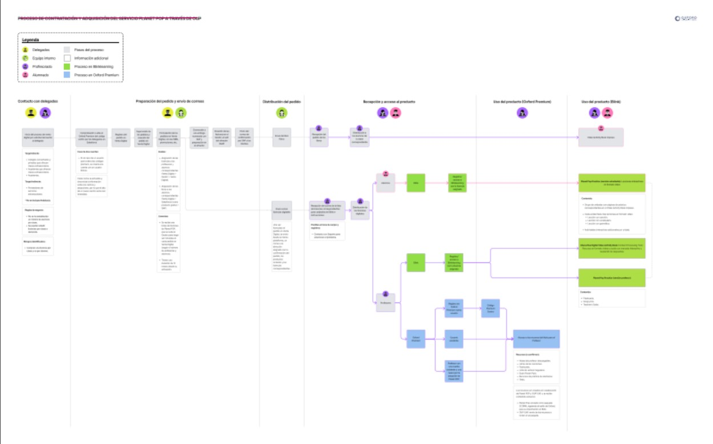

Accessibility Across a Product Ecosystem
6 min readAt a glance
I worked across product, content and development to make accessibility requirements easier for teams to understand, apply and maintain.
The work connected platform audits and screen reader testing with design system foundations, team-specific documentation and implementation support.
- My role
- UX/UI Designer
- Scope
- Platforms, interfaces and PDFs
- Methods
- Audits and assistive technology testing
Deliverables: accessibility reports, testing documentation, component guidance and recommendations for different teams.

Three decisions behind the work
Read the full case study · 12 sections
1. Overview
Role: UX/UI Designer
Scope: Accessibility research, audits, documentation, testing and design system support.
Tools: Figma, AXE, Google Lighthouse, NVDA, JAWS, Microsoft Narrator and WCAG references.
This was the broadest project I worked on at Oxford. Rather than improving a single feature or product area, it looked at how accessibility affects an entire product ecosystem, and at why the same barriers kept reappearing in different places.
That meant moving across product interfaces, learning platforms, PDFs, documentation, design system foundations and implementation support. Each of those had its own rules, its own team and its own way of breaking.
2. Context
Most of accessibility is invisible to most users and essential for the rest. Very few of the real barriers show up in a visual review, which is exactly why they survive so long.
The project had to hold several perspectives at the same time: usability, technical implementation, content structure, legal requirements and the day to day workflows of the teams producing the content.
That mapping mattered more than it sounds. Legal text says what must be guaranteed, not what to build. Putting each requirement next to the criterion that satisfies it turned a compliance obligation into something a designer or a developer could act on, and it gave legal and product a shared vocabulary for the first time.
Accessibility could not be solved through interface design alone. It needed a shared understanding across teams that mostly never worked together.
3. Building accessibility into components
Rather than reviewing accessibility at the end of each project, I built it into the design system itself: contrast validation, typography, focus states, error states, labels, headings and layout structure all carried their accessibility requirements with them. If a designer used the component, they got the accessible behaviour by default.
Focus states were the clearest example. They are the easiest thing in a design system to skip, because they are invisible to anyone using a mouse, and they are the only thing standing between a keyboard user and the interface. Specifying them once, with the exact CSS, removed a recurring argument about whether the browser default was good enough.

4. Accessibility Report
One of the largest pieces of work was a detailed accessibility report covering the European Accessibility Act, WCAG 2.1, the product requirements that followed from both, and what all of it implied for implementation.
The point was to build a shared reference before anyone proposed solutions. Without it, every conversation restarted from a different definition of what accessible meant. With it, discussions could be anchored to the four principles the standard is organised around: Perceivable, Operable, Understandable and Robust.
5. Structuring the Process
Once the requirements were defined, I turned them into an action plan: how to audit, how to identify issues, how to prioritise them, how to validate the fixes and how to keep the whole thing from decaying afterwards. That plan became the framework used across different products and formats.
Prioritisation carried most of the weight. Accessibility issues are not equivalent. Some block access to content completely, others are improvements that make an existing task easier. Treating them as one undifferentiated backlog is how accessibility work stalls, so the plan separated the two from the start.
6. Testing across assistive technologies
A large part of the project was testing products with NVDA, JAWS and Microsoft Narrator, and documenting how each one behaved in each environment. They do not agree with each other, so a single pass with one of them proves very little.
Screen readers do not navigate interfaces visually. They navigate headings, buttons, forms, tables and landmarks, which changes both how issues are found and how they have to be explained to the people fixing them.
Recording the combinations this way made the results reproducible by someone else, which is what turned the testing from an opinion into evidence a development team could act on.

7. Comparing Environments
I tested the same content across websites, learning platforms and PDFs, and compared tagged against non tagged versions of the same documents. Accessibility behaviour changed considerably depending on the format, even when the content was identical.
The most useful finding was about PDFs. A PDF can contain perfectly good text, images and headings and still be unusable with a screen reader. Reading order, tagging and document structure are what decide whether it can be interpreted, and none of those are visible to the person who created the file. That single insight changed how the editorial teams produced documents.
8. Adapting guidance to each team
Accessibility standards explain what needs to be true. They rarely explain how to get there in a specific tool, on a specific day, under a deadline. So I wrote documentation adapted to each team: accessibility reports and action plans, editorial guidelines, multimedia and image guidelines, format specific recommendations, and research into the tools each team already used.
Writing separately for each team took longer than writing one general guide, and it was the only version anyone actually applied. An editor does not need the same document as a developer.
9. Research with Users
Alongside the technical testing, I interviewed different types of users and analysed 634 recorded sessions to see how the platform was used in practice rather than in theory.
The same themes came back repeatedly: cognitive load, clear organisation, predictable navigation and getting to resources quickly. Very little of it was exotic. Most accessibility difficulty in the classroom turned out to be about understanding and finding things fast, which is also what makes the platform better for everyone else.
10. Working Across Teams
The work meant regular collaboration with development, product, legal, editorial and multimedia, and most decisions involved balancing a technical constraint against a content requirement against an accessibility goal.
That was the real shape of the project. Most accessibility issues do not originate in design. They come from content structure, how documents are created, development decisions and publishing workflows. Fixing them at the interface is treating a symptom.
11. Handoff with Development
I worked closely with developers through reusable components, Bootstrap based structures, spacing rules, Figma Dev Mode, feature documentation and regular follow ups, with the aim of removing ambiguity before it reached the code.
Small implementation differences have real accessibility consequences. Spacing, focus behaviour, component states and semantic structure all need to survive the trip from design to development intact, and the only reliable way to make that happen is to specify them precisely enough that there is nothing left to guess.
12. Outcome
The initiative established a shared accessibility framework across product, development, editorial, legal and multimedia, embedding accessibility into how products would be designed, built and maintained rather than how they would be reviewed.
Shared processes, documentation and design foundations reduced ambiguity, improved collaboration between teams and moved accessibility much earlier in the product lifecycle.
Beyond compliance, the approach produced more consistent experiences across the platform, reduced cognitive load through clearer structure, and improved usability for everyone, not only for people relying on assistive technologies. That was always the argument that landed best internally, and it happens to be true.





This project is subject to confidentiality agreements, so some internal deliverables, research artefacts, documentation, and design files cannot be publicly shared. The examples shown have been adapted to illustrate my process and contribution while respecting those commitments.
If you'd like to know more about the project or my role, I'd be happy to discuss it during an interview.